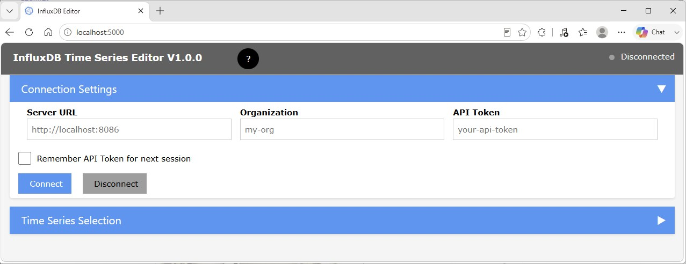
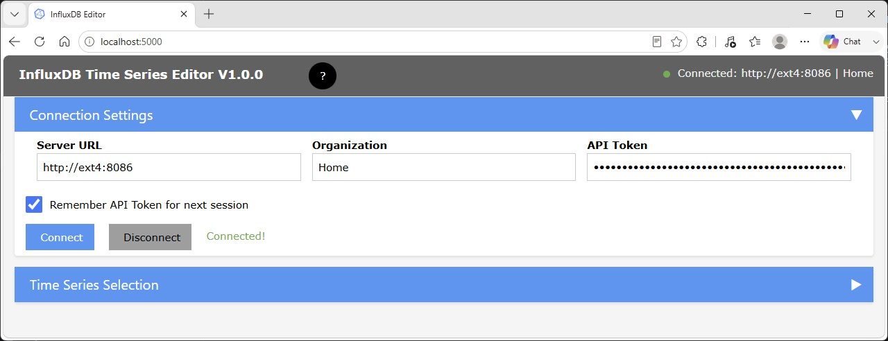
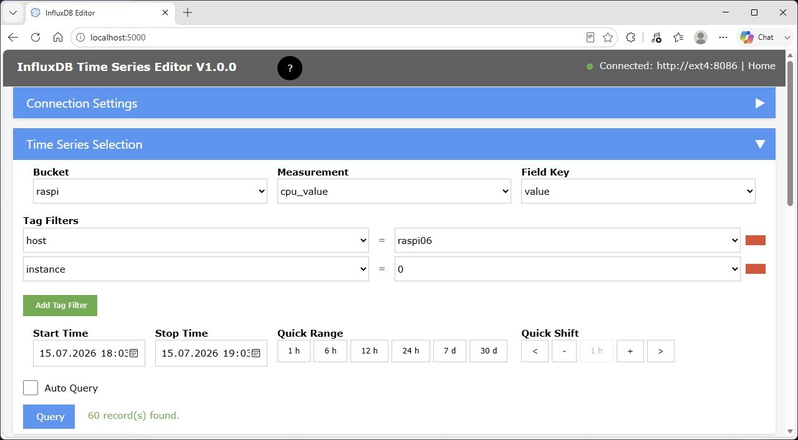
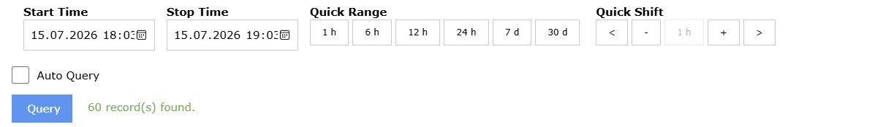
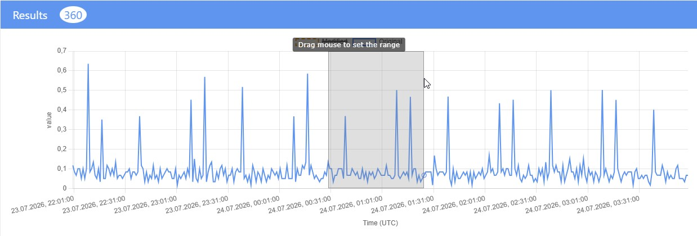
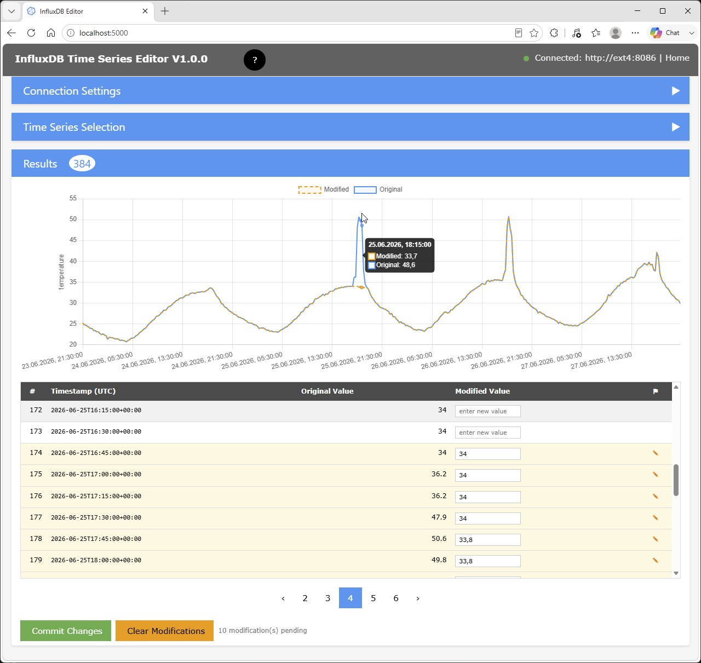
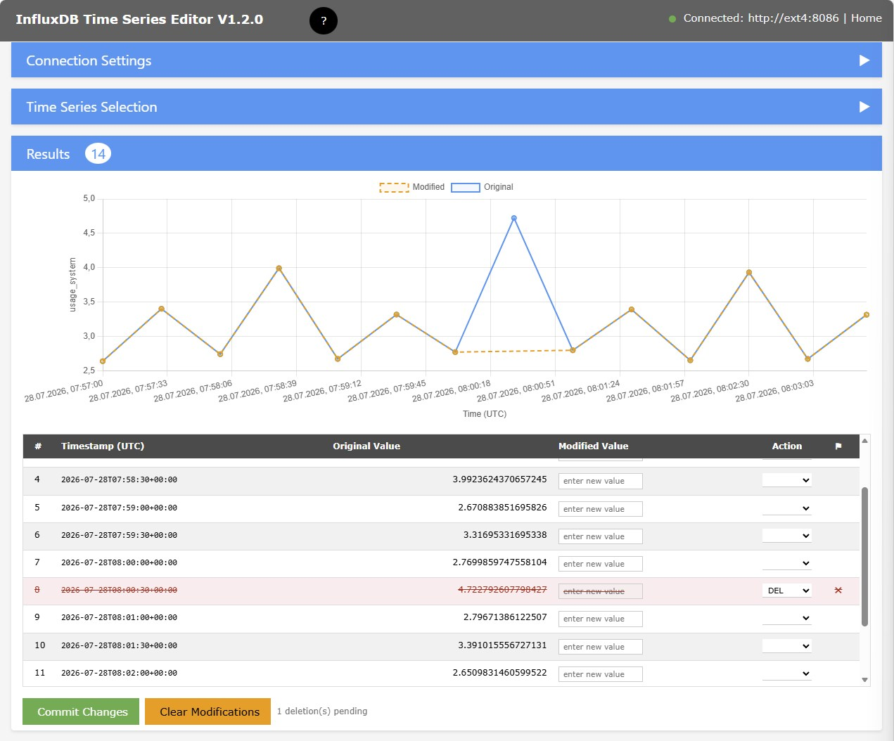
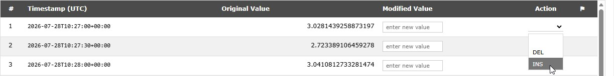
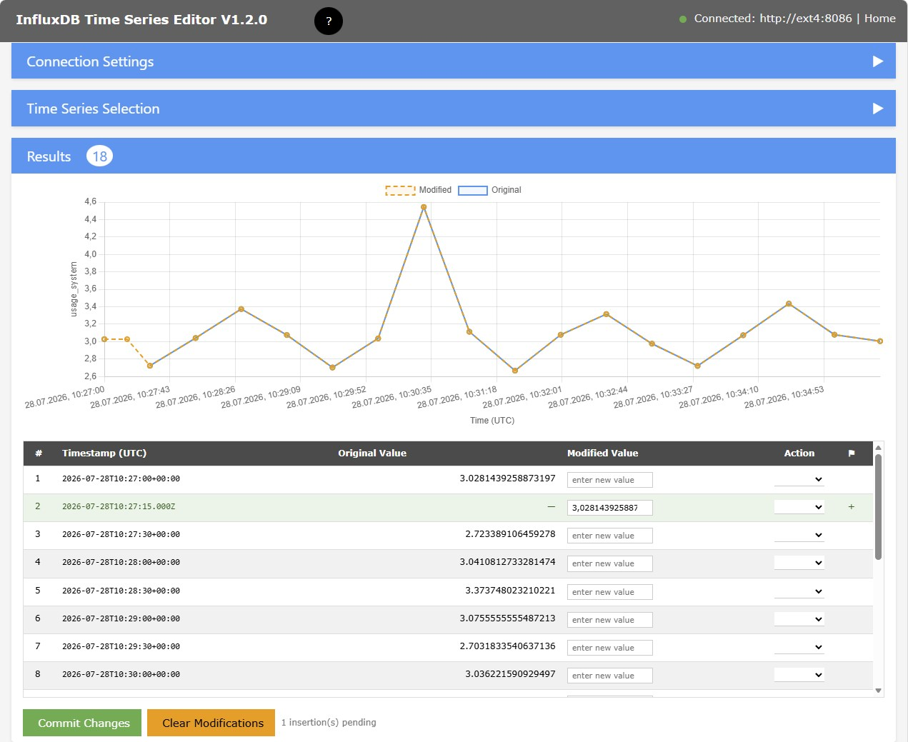

Influx Time Series Editor Usage
Starting Influx TS Editor
In a browser, enter URL and port specified during installation, e.g.
http://localhost:8087
Connecting to an InfluxDB Instance
When initially started, the section for Connection Settings is shown with empty credential fields:

- Enter server and port of your InfluxDB instance
- Enter the Influx Organization under which the data of interest are located.
- For authorization, you need an Influx API Token which allows access to the data of interest. If an All Access API Token has been generated, it is recommended to use this.
If you want to reuse these settings for future database access, check the Remember API Token for next session checkbox.
After pressing the Connect button, the connection to the specified instance will be established and the connection status is shown in the top application bar:

Now you can close the Connection Settings group using the arrow button.
Selecting a Time Series
With connection to the InfluxDB, the list of available buckets will be populated for selection:

Successively, you select a Bucket, a Measurement and a Field Key.
For filtering a specific Time Sequence, you may need to add Tag Filters using the Add Tag Filter button.
Each Tag Filter requires a Tag Key and a Tag Value.
Tag Filters will only be available for selection after at least a Bucket and a Measurement have been specified.
Tag filters can be removed by clicking on the red rectange on the right side of a filter entry.
Selecting a Time Range
To locate the Time Series data to be modified, you need to select the relevant time range:

NOTE: Time range specification use the local date/time.
Initially, the time range is set to one hour before the current time.
You can now either choose a different time range using the calendar controls for Start Time and Stop Time.
Quick Range
To change the size of time window, you can use one of the Quick Range buttons.
This will update the time range, keeping the center of the previously set range.
NOTE: If the stop time would be later than the current time, it is set to the current time.
Quick Shift
The center field of Qick Shift displays the active size of the time range. It is updated after pressing one of the Quick Range buttons.
Using the + and - buttons, you can increse or decrease the window size.
The minimum size is 1 m. Decreasing 1 h changes to 59 m. Increasing 59 m changes to 1 h.
If the current unit is m (minute), the value is increased or decreased by 5 m.
Using the < or > buttons, you can shift the time range backward or foreward in time.
The shift will be by half the window size.
NOTE: If the stop time would be later than the current time, it is set to the current time.
Selecting Range with Mouse
When the data chart is visible, you can select a range by click-dragging with the mouse in the chart area:

- Left click at the start time.
This will show a hint indicating that range selection mode is active - With mouse-down, drag to the intended end of the range.
While dragging, the range will be indicated by gray overlay. - Release the mouse button.
This will adjust Start Time and Stop Time as well as the range size under Quick Shift
If the selected range is smaller than 5 minutes, the original range is retained.
The new range will be centered at the selected range.
The range width will be rounded up to an integer number of units m, h or d, whatever fits best.
If Auto Query is selected, the new range will immediately be applied.
Query
The Query button will execute a query with the current settings.
To immediately see the effect of changing Quick Range or Quick Shift, you can activate the Auto Query checkbox.
Auto Query is not executed when the time range is changed by use of the calendar controls.
Data
The query will retrieve the Time Series data from the InfluxDB and present them as chart and as table:

The example above is a Time Series for the temperature measured by a sensor which, in certain time periods, was exposed to direct sun radiation, producing the exceptional peaks of unrelistic air temperatures.
NOTE: The chart x-axis uses the actual UTC timestamps from InfluxDB, so gaps between points reflect the real elapsed time.
Blue lines and data points represent the original data.
Orange lines and data points represent the modified data.
You can hover with the mouse over the data points to visualize timestamp and Field Values.
Editing Field Values
In the column Modified Value you can enter modified values.
Modified rows are highlighted and carry a special marker.
Modified values are committed using the original field value type retrieved during the query.
Deleting Data Points
In the column Action you can select action code DEL to mark a data point for deletion.
Rows marked for deletion are highlighted in red with strikethrough text and the Modified Value input is disabled.
When at least one row is marked with DEL, the orange chart line is shown without those points, giving a preview of the data after deletion.
For restrictions, see Deleting Data

Inserting Data Points
You can insert a new point between two existing points by selecting action INS for the point after which to insert:

NOTE: This option will be offered only if the time series is fully qualified, i.e.: if the filter in Time Series Selection includes the complete tag set.
The new point will be inserted half way between this and the next point with the modified value initialized with the value

Committing changes
After review of modifications, use button Commit Changes to commit the modified Field Values and/or deletions to the database.
To reverse all modifications and deletions, use the Clear Modifications button.